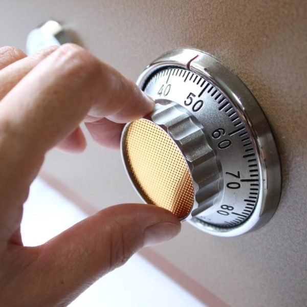

David was very professional and accommodating. He was prompt and did an excellent job getting me back inside my home.…

I called Fast Austin Locksmith because of all the positive reviews I read in here. This company was really THAT…
We needed a couple of locks re-keyed and they were able to schedule same day. David was friendly, professional and…
I had a great experience with Fast Austin Locksmith. I got an immediate response to my request for service and…

Security safes are incredibly convenient security instruments that protect important documents, precious photos, and valuable belongings safe from fire damage, water damage, theft, and more. However, that convenience can quickly turn into a major inconvenience if you forget the code or lose the key, locking you out of the safe. The good news is that Fast Austin Locksmith has you covered when you need a safe unlocking in Austin. Though a safe opening is a challenging task that requires advanced tools and careful work, our qualified technicians have the experience and equipment to get the job done. Call Fast Austin Locksmith to arrange a safe opening in Austin today. We can schedule an appointment or arrange an emergency dispatch.
DIY Safe Opening
If you are on a budget, then you can certainly try DIY safe opening by following tutorials online. However, we want you to know that it is not an easy task. At best, it will take up a significant amount of time. At worst, you can end up damaging your safe to the point where destroying the safe will be the only way in. Still, unlocking the safe on your own can save you some cash. However, if you are not low on cash, then consider letting the qualified locksmiths at Fast Austin Locksmith take care of that safe opening. This way, you will not have to worry about having to buy a new security safe because of damage.
Professional Safe Unlocking
You bought that your security safe because you trust that it will keep intruders out. For the most part, security safes are solid at their job. However, the very same mechanisms that keep out thieves can keep you out as well. If you have lost your key or forgotten your security safe’s combination, then you have some work to do. You can either try unlocking the safe on your own, which can take time or cause damage, or you can leave it to the professionals.
Fast Austin Locksmith is proud to offer quick, reliable, and affordable safe unlocking in Austin. We have plenty of mobile locksmiths who are trained, experienced, and equipped to reunite you with your valuables and belongings in the safe. We are able to handle most types of safes but do have restrictions. Call Fast Austin Locksmith now to consult with a professional and find out if we can unlock your safe today. Remember to have your safe’s details in hand.
We Are Available Around the Clock
Whatever you have stuck in your security safe, we know it is valuable. Sometimes you need to access it urgently. For example, you might have your passport, birth certificate, car title, or another important document that you need to retrieve as soon as possible. Fortunately, it does not matter when you need a safe unlocking. Fast Austin Locksmith is available 24 hours a day, 7 days a week, and 365 days a year. Call Fast Austin Locksmith whenever you need a safe opening in Austin. Our live representatives are ready to take your call.

We offer 24-Hour emergency auto, residential & commercial locksmith services.

We have years of experience providing reliable mobile locksmith services in the area.

Fast Austin Locksmith is a locally owned & operated locksmith company.